Create PCD
This section
This section is still under development!
PointCloudMapper

Description
PointCloudMapper is a tool for a vehicle based point cloud mapping in a simulation environment.
It is very useful when you need a point cloud based on some location, but don't have the possibility to physically map the real place.
Instead you can map the simulated environment.
Required Data
To properly perform the mapping, make sure you have the following files downloaded and configured:
- Lanelet2 format OSM data (
*.osmfile) -
3D model map of the area
How to obtain a map
You can obtain the 3D model of the area by using a
Environmentprefab prepared for AWSIM or by creating your own. You can learn how to create you ownEnvironmentprefab in this tutorial. -
Configured in-simulation vehicle object with sensors attached (only the LiDAR is necessary)
Vehicle model
For the sake of creating a PCD the vehicle model doesn't have to be accurate. It will be just a carrier for LiDAR. The model can even be a simple box as shown earlier in this tutorial. Make sure it is not visible to the LiDAR, so it does not break the sensor readings.
Import OSM
-
Drag and drop an OSM file into Unity project.
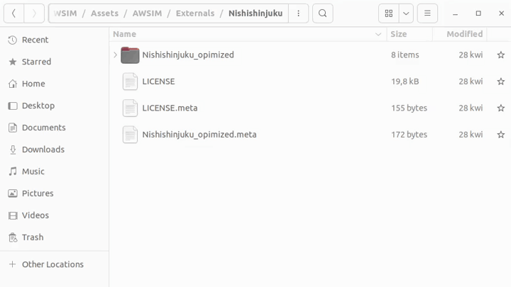
-
OSM file will be imported as
OsmDataContainer.
Setup an Environment
Fora mapping an Environment prefab is needed.
The easiest way is to create a new Scene and import the Environment prefab into it.
Details on how to do this can be found on this tutorial page.
Setup a Vehicle
Create a Vehicle GameObject in the Hierarchy view.
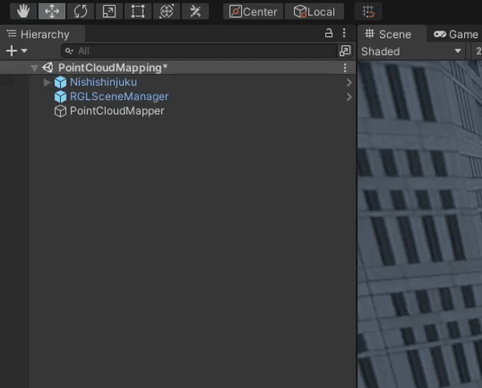
Add visual elements (optional)
Add vehicle model by adding a Geometry Object as a child of Vehicle and adding all visual elements as children.
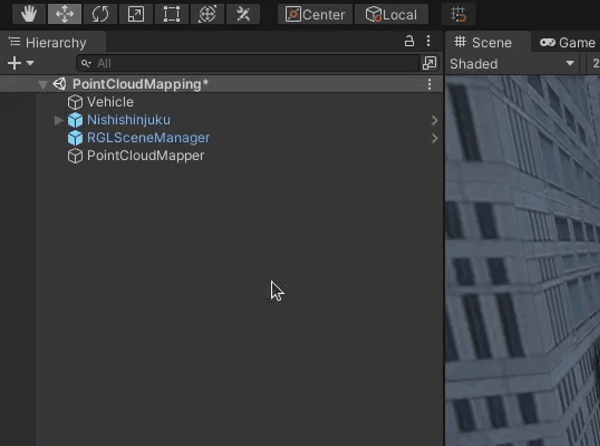
Visual elements
You can learn how to add visual elements and required components like Mesh Filter or Mesh Renderer in this tutorial.
Add a Camera (optional)
Add a Camera component for enhanced visuals by adding a Main Camera Object as a child of Vehicle Object and attaching a Camera Component to it.
-
Add a
Main CameraObject.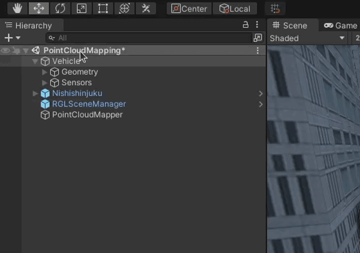
-
Add a
CameraComponent by clicking 'Add Component' button, searching for it and selecting it.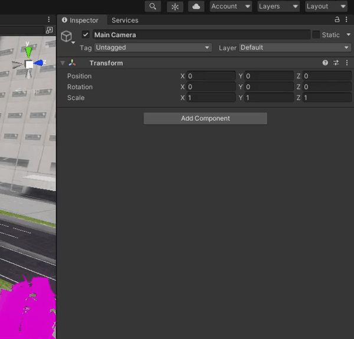
-
Change the
Transformfor an even better visual experience.Camera preview
Observe how the Camera preview changes when adjusting the transformation.
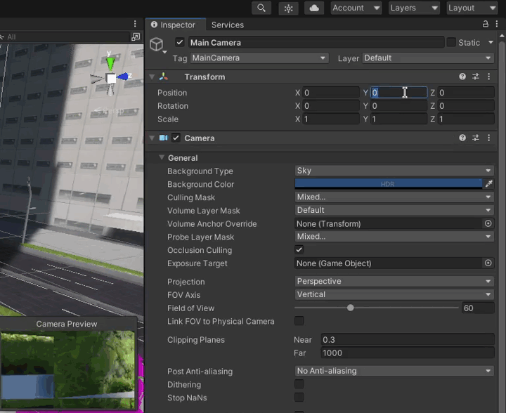
Setup Vehicle Sensors (RGL)
This part of the tutorial shows how to add a LiDAR sensor using RGL.
RGL Scene Manager
Please make sure that RGLSceneManager is added to the scene.
For more details and instruction how to do it please visit this tutorial page.
-
Create an empty
SensorsGameObject as a child of theVehicleObject.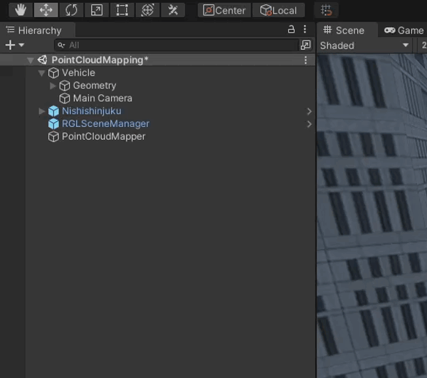
-
Create a
LidarGameObject as a child of theSensorsObject.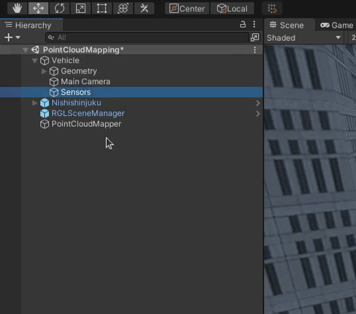
-
Attach Lidar Sensor (script) to previously created
LidarObject by clicking on the 'Add Component' button, searching for the script and selecting it.Point Cloud Visualization
Please note that Point Cloud Visualization (script) will be added automatically with the Lidar Sensor (script).
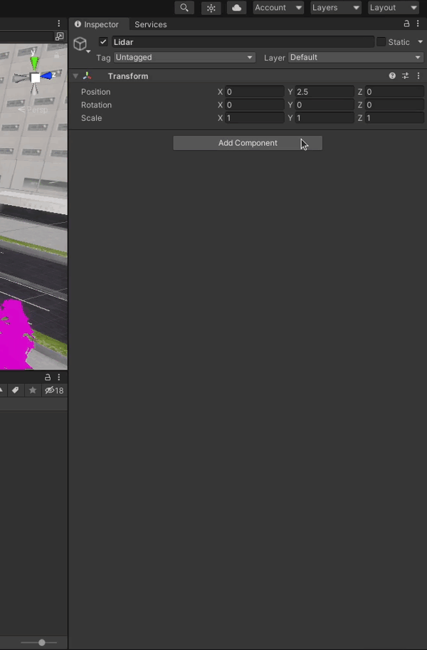
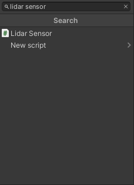
-
Configure LiDAR pattern, e.g. by selecting one of the available presets.
Example Lidar Sensor configuration
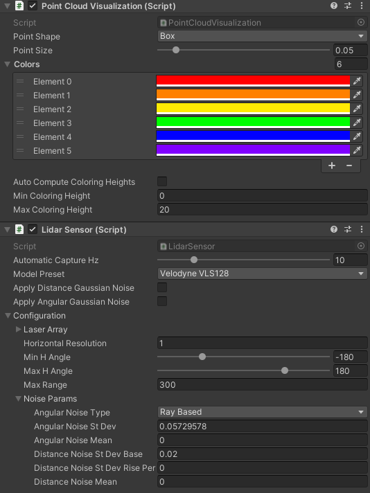
-
Attach RGL Mapping Adapter (script) to previously created
LidarObject by clicking on the 'Add Component' button, searching for the script and selecting it.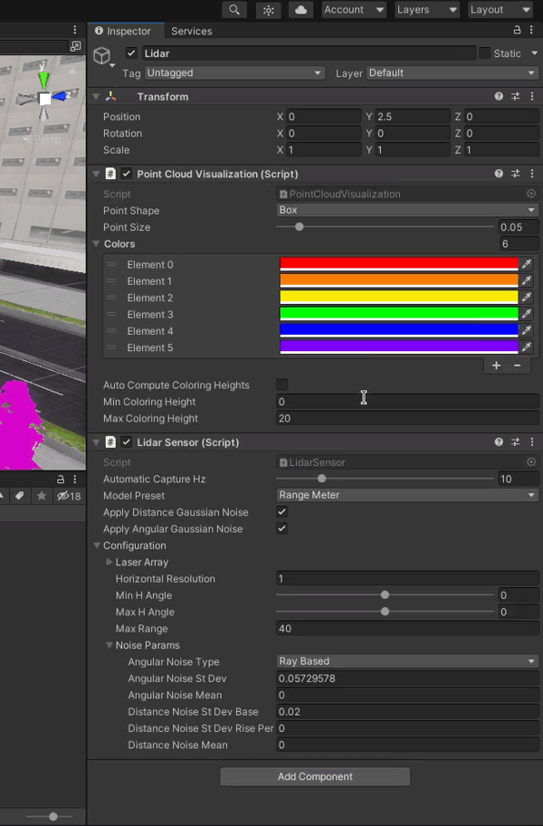
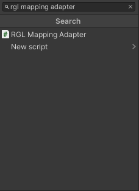
-
Configure
RGL Mapping Adapter- e.g. setLeaf Sizefor filtering.Example RGL Mapping Adapter configuration
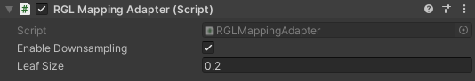
Effect of Leaf Size to Point Cloud Data (PCD) generation
A small Leaf Size could result in a noisy PCD, while a large Leaf Size could result in excessive filtering such that objects like buildings are not recorded in the PCD.
In the following examples, it can be observed that when a Leaf Size is 1.0, point clouds exist on roads in which they shouldn't appear.
When a Leaf Size is 100.0, buildings are filtered out and results in an empty PCD.
A Leaf Size of 10.0 results in a reasonable PCD in the given example.
| Leaf Size = 1.0 | Leaf Size = 10.0 | Leaf Size = 100.0 |
|---|---|---|
 |
 |
 |
Setup PointCloudMapper
-
Create a
PointCloudMapperGameObject in the Hierarchy view.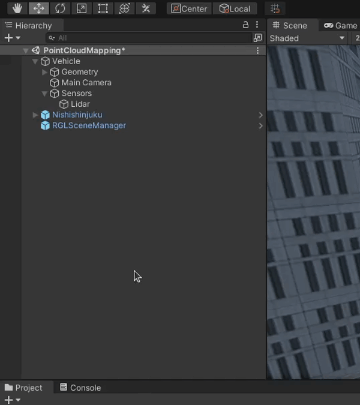
-
Attach
Point Cloud Mapperscript to previously createdPoint Cloud MapperObject by clicking on the 'Add Component' button, searching for the script and selecting it.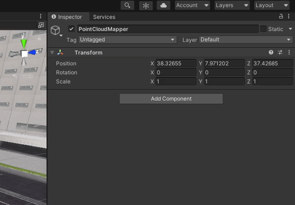
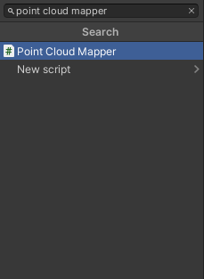
-
Configure the
Point Cloud Mapperfields:Osm Container- the OSM file you imported earlier-
World Origin- MGRS position of the origin of the sceneWorld Origin coordinate system
Use ROS coordinate system for World Origin, not Unity.
-
Capture Location Interval- Distance between consecutive capture points along lanelet centerline Output Pcd File Path- Output relative path fromAssetsfolderTarget Vehicle- The vehicle you want to use for point cloud capturing that you created earlier
Example Point Cloud Mapper configuration
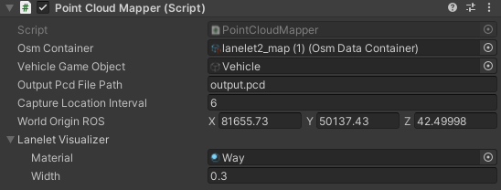
Effect of Capture Location Interval to PCD generation
If the Capture Location Interval is too small, it could result in a sparse PCD where some region of the map is captured well but the other regions aren't captured at all.
In the below example, Leaf Size of 0.2 was used. Please note that using a different combination of leaf size and Capture Location Interval may result in a different PCD.
| Capture Location Interval = 6 | Capture Location Interval = 20 | Capture Location Interval = 100 |
|---|---|---|
 |
 |
 |
Capture and Generate PCD
If you play simulation with a scene prepared with the steps above, PointCloudMapper will automatically start mapping.
The vehicle will warp along centerlines by intervals of CaptureLocationInterval and capture point cloud data.
PCD file will be written when you stop your scene or all locations in the route are captured.
If the Vehicle stops moving for longer and you see the following message in the bottom left corner - you can safely stop the scene.
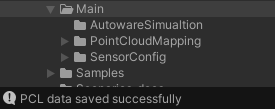
The Point cloud *.pcd file is saved to the location you specified in the Point Cloud Mapper.
Convert the PCD
Install required tools
The tools required for PCD conversion can be installed on Ubuntu with the following command
sudo apt install pcl-tools
The generated PCD file is typically too large. Therefore you need to down-sample it.
-
Change directory to the one you specified earlier.
cd <PATH_TO_PCD_FILE> -
Down-sample the PCD
output.pcdgenerated in simulation.pcl_voxel_grid <PCD_FILE_NAME> downsampled.pcd -leaf 0.2 0.2 0.2 -
Convert the down-sampled file into an ASCII format.
pcl_convert_pcd_ascii_binary downsampled.pcd final.pcd 0 -
The
final.pcdis a ready to use point cloud file.
Verify the PCD
To verify your PCD you can launch the Autoware with the PCD file specified.
-
Copy your PCD from the AWSIM project directory to the Autoware map directory.
cp <PATH_TO_PCD_FILE> <PATH_TO_AUTOWARE_MAP>/ -
Source the ROS and Autoware
source /opt/ros/humble/setup.bash source <PATH_TO_AUTOWARE>/install/setup.bash -
Launch the planning simulation with the map directory path (
map_path) and PCD file (pointcloud_map_file) specified.PCD file location
The PCD file needs to be located in the Autoware map directory and as a
pointcloud_map_fileparameter you only supply the file name, not the path.Absolute path
When launching Autoware never use
~/to specify the home directory. Either write the full absolute path ot use$HOMEenvironmental variable.ros2 launch autoware_launch planning_simulator.launch.xml vehicle_model:=sample_vehicle sensor_model:=sample_sensor_kit map_path:=<ABSOLUTE_PATH_TO_AUTOWARE_MAP> pointcloud_map_file:=<PCD_FILE_NAME> -
Wait for the Autoware to finish loading and inspect the PCD visually given the Effect of Leaf Size and Effect of Capture Location Interval.
Sample Scene
PointCloudMapping.unity is a sample scene for PointCloudMapper showcase. It requires setup of OSM data and 3D model map of the area according to the steps above.
Sample Mapping Scene
In this example you can see a correctly configured Point Cloud Mapping Scene.